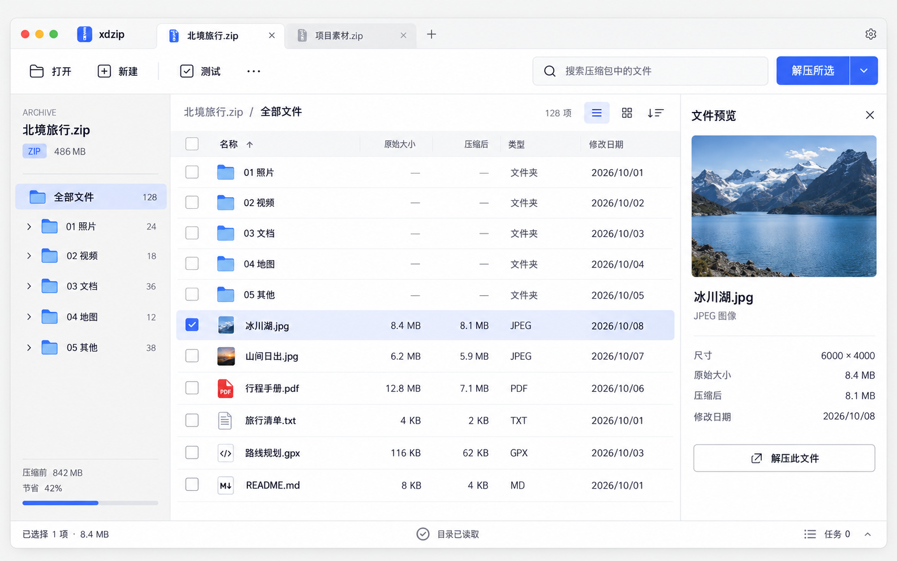
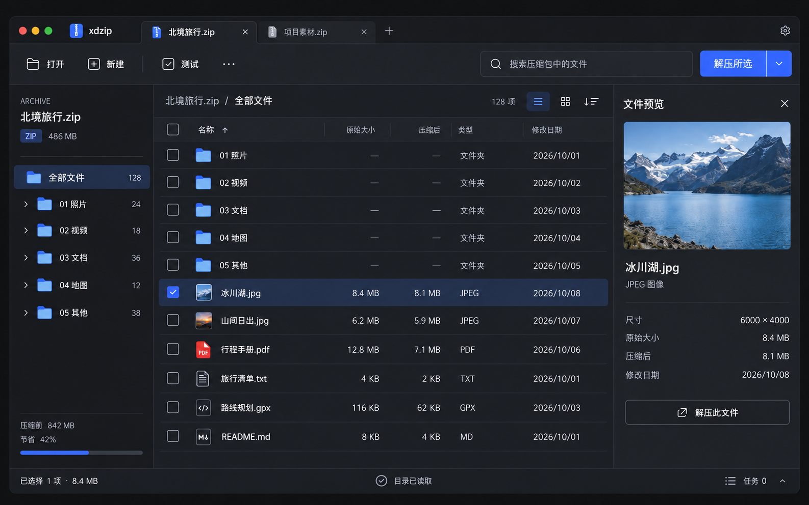
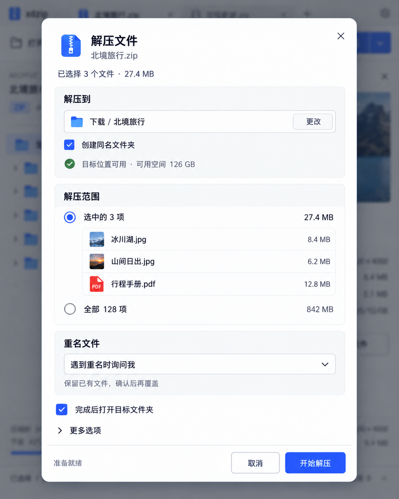

<!doctype html><html lang="zh-CN"><meta charset="utf-8"><meta name="viewport" content="width=device-width,initial-scale=1"><title>xdzip · 高保真设计提案</title><style>*{box-sizing:border-box}body{margin:0;background:#f5f5f3;color:#20232a;font:16px/1.7 system-ui,sans-serif}main{max-width:1440px;margin:auto;padding:32px 20px}h1{font-size:36px;letter-spacing:-1px;margin-bottom:8px}p{color:#626874;max-width:860px}figure{margin:40px 0}img{display:block;width:100%;height:auto;border-radius:16px;box-shadow:0 12px 40px #20232a16}.detail{max-width:840px;margin:auto}figcaption{padding:12px 0}a{color:#365fe8}nav{display:flex;gap:20px;flex-wrap:wrap}footer{border-top:1px solid #dcdfe3;padding:24px 0}@media(max-width:600px){main{padding:24px 12px}h1{font-size:30px}img{border-radius:8px}}</style><main><header><small>XDZIP / VISUAL DESIGN / 2026.10</small><h1>让压缩文件，一目了然。</h1><p>Qt Quick 跨平台归档工具的高保真视觉提案。暖灰、钴蓝与石墨深色，围绕文件浏览、选择和解压组织操作。</p><nav><a href="#light">浅色主窗口</a><a href="#dark">深色主窗口</a><a href="#extract">解压面板</a><a href="README.md">设计说明</a><a href="tokens.json">设计参数</a></nav></header><figure id="light"><figcaption>01 / 浅色主窗口 · 以文件内容为中心</figcaption></figure><figure id="dark"><figcaption>02 / 石墨深色 · 保持一致的信息层级</figcaption></figure><figure id="extract"><div class="detail"></div><figcaption>03 / 解压确认 · 操作前明确目标与范围</figcaption></figure><footer><p>这些图片是视觉设计提案，尚未实现为 Qt 界面。预览功能对应后续阶段。参考：<a href="https://www.bandisoft.com/bandizip/screenshots/">Bandizip 官方界面</a>、<a href="https://panic.com/transmit/">Transmit</a>、<a href="https://linear.app/now/behind-the-latest-design-refresh">Linear 2026 设计说明</a>。</p></footer></main></html>